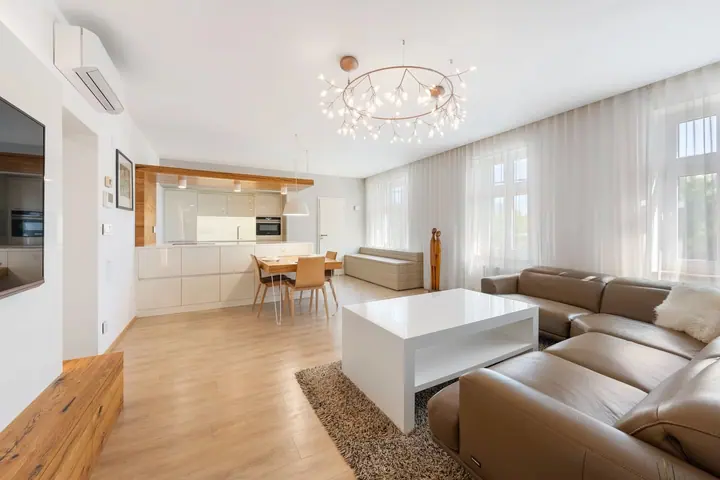
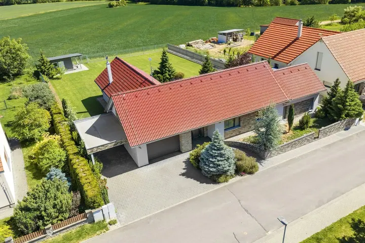

01 / 04
HDR fotografie nemovitostí
Fotím interiéry i exteriéry v HDR a srovnávám svislice, aby prostor působil přirozeně. Běžně dodávám za 2–3 pracovní dny, expres po domluvě.
Zeptat se na termín→




Nemovitost, která zaujme na první pohled
Zeptat se na termín →(01) Ahoj
Jmenuji se Daniel Urban a pod značkou Scan360 fotím byty , rodinné domy i firemní prostory v Brně a po celé republice. Pomáhám makléřům, developerům i majitelům prodávat nemovitosti rychleji a za lepší cenu.
(02) Co dělám
01 / 04
Fotím interiéry i exteriéry v HDR a srovnávám svislice, aby prostor působil přirozeně. Běžně dodávám za 2–3 pracovní dny, expres po domluvě.
Zeptat se na termín→02 / 04
Digitální dvojče nemovitosti s dollhouse pohledem, mattertagy, 4K fotografiemi i půdorysy. Matterport Pro3 skenuje i venku na přímém slunci, takže prohlídka může pokračovat až do zahrady.
Zeptat se na termín→03 / 04
Video, které prodává emocí, s hudbou, záběry z dronu a případně s komentářem makléře. Letecky nafotím a natočím nemovitost, pozemek i okolí lokality.
Zeptat se na termín→Dále nabízím
Fotím a skenuji showroomy, prodejny, kliniky i hotely pro firemní web a sociální sítě. Prohlídku umím publikovat také do Map Google, kde si vás zákazníci projdou dřív, než dorazí.
↗(03) Portfolio
Kliknutím fotku zvětšíte · fotografie jsou ilustrační
(04) Postup
Od první zprávy po hotovou galerii.
Krok 1 z 4
Napíšete mi, o jakou nemovitost jde a co potřebujete. Společně vybereme fotografie, prohlídku, video nebo jejich kombinaci.
Krok 2 z 4
Projdeme, které části jsou pro prezentaci nejdůležitější. Před focením doporučím uklidit rušivé věci, zkontrolovat osvětlení a vyčistit skla a zrcadla.
Krok 3 z 4
Nafotím interiéry i exteriéry, naskenuji prohlídku Matterport a podle domluvy natočím video nebo záběry z dronu.
Krok 4 z 4
Fotografie a prohlídku běžně dodávám za 2–3 pracovní dny, video za 4–5 pracovních dnů. Po předchozí domluvě zvládnu expres do 24 hodin.
Hlavní fotka rozhoduje během prvních pěti sekund.
(05) Za objektivem
Jsem realitní fotograf se sídlem v Brně. Připravuji prezentace bytů, rodinných domů i komerčních prostor tak, aby zájemce poznal vzhled nemovitosti, její dispozici i okolí. Spojuji HDR fotografie, virtuální prohlídky Matterport, videoprohlídky a záběry z dronu.
V záplavě inzerátů rozhoduje hlavní fotografie během prvních pěti sekund. Proto si dávám záležet na přirozeném světle, čitelných materiálech a rovných svislicích. Prázdné místnosti umím virtuálně zařídit nábytkem a k prohlídce připravím 2D i 3D půdorysy.
Kromě prodeje nemovitostí pracuji i pro firmy. Fotím a skenuji showroomy, prodejny, kliniky a hotely a prohlídky publikuji do Google Street View. Všechno domluvíte s jedním dodavatelem, od výběru služeb po výsledné zpracování.
Daniel
Daniel Urban · Realitní fotograf a virtuální prohlídky
Fotografie a virtuální prohlídku Matterport běžně dodávám za 2–3 pracovní dny, video za 4–5 pracovních dnů. Při expresním zpracování po předchozí domluvě dodám fotky i prohlídku do 24 hodin.
Ano. Sídlím v Brně, ale zakázky realizuji po celé České republice.
Může. Matterport Pro3 skenuje i venku na přímém slunci, takže si zájemce projde terasu, bazén nebo pergolu ve stejné prohlídce jako dům.
Ukliďte plochy, které budou v záběru, odstraňte osobní věci a obaly, zkontrolujte osvětlení a vyčistěte skla a zrcadla. Ostatní projdeme spolu před focením.
(07) Kontakt
Napište pár vět o tom, co si představujete, a termín, který se vám hodí.